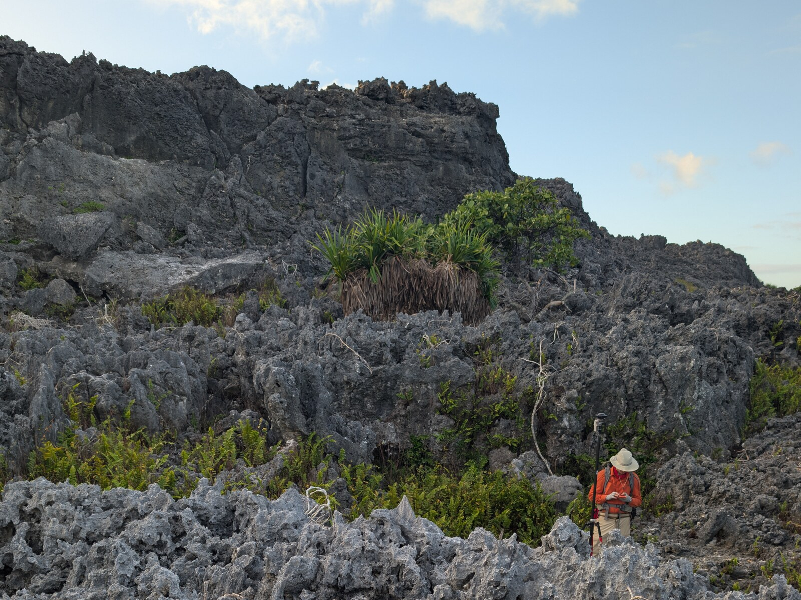

Landscapes & sea level
Field mapping, 3D surveys, and models of reef growth and sediment transport.
The research questionI’m seeking graduate students in field geology, geochemistry, and quantitative Earth history.
Send a CV, your research interests, and a possible start period.
Email Blake
Field mapping, 3D surveys, and models of reef growth and sediment transport.
The research questionMicroscopy, isotope measurements, and models of how sediments form and alter.
The research questionMSc and PhD inquiries are welcome. An MSc-to-PhD transfer may be possible after about a year, depending on progress and program requirements. Contact me about fit, timing, and available funding.
UVic admission requirementsRegular individual meetings, clear expectations for feedback and authorship, and training shaped around your project. Our wider Earth History community includes Anne-Sofie Ahm’s and Jon Husson’s groups.
You need not arrive with every skill. Geology, chemistry, physics, mathematics, and computing can all contribute. We welcome different backgrounds and can discuss alternatives when field travel is a barrier.
Undergraduates and prospective postdocs are also welcome to inquire.